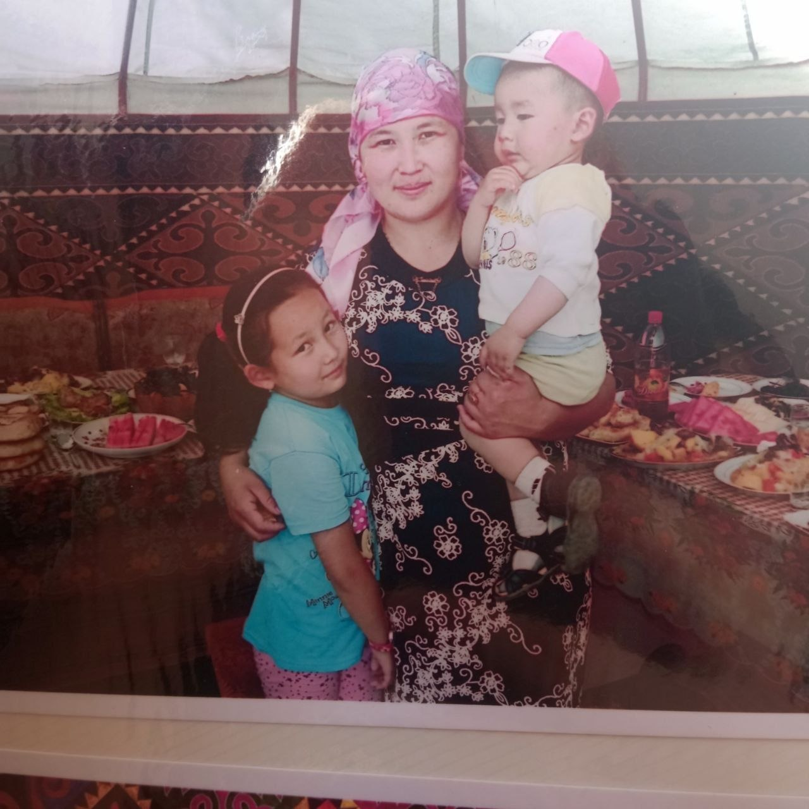

Здравствуйте! Меня зовут Адинай. Я родилась в Таласской области, 29 июля 2006 года в субботнее утро. Детство провела в Таласе, окончила школу там же, сейчас я на втором курсе. Учусь в КНАУ, на факультете ИИСиДО, кафедра Прикладная информатика в экономике.
← Вернуться к семье